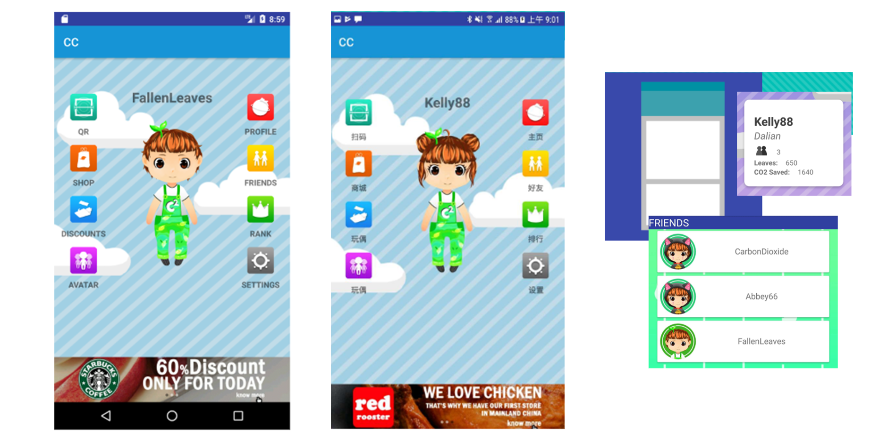

I worked with a student in an IT Design Studio course to aid with programming, ticket creation in GitHub and communication within his group. I'm also currently assisting with a PhD project by providing typing and computer support in areas of research, professional documents and presentations.
Callum Bryson
Hi, I'm a fourth year Software Engineering/Mathematics student at the University of Queensland, Brisbane, Australia.
I build programs, apps and websites using Python, Javascript and Java. I also have experience with React Native, compilers and databases. I'm currently working on my thesis - a deep learning based method of removing make-up from portraits, extending research from here and here.
Check out some of my projects at my GitHub.
My Experience
Typing Assistance
PhD and Undergrad Courses - University of Queensland
Work Experience
I have been assisting with the creation of an online store through research of
products,
formatting
of
images using Photoshop and configuration using Magento, an open-source PHP backend. I'm
working
in
a
professional environment in the heart of the Brisbane CBD alongside experienced web
developers.
e-Commerce and Magento - Online
Solutions
Experts
Tutoring
I worked as a tutor for high school students, covering Grade 11 and 12 Physics, Maths
B,
Maths C
and
Information
Processing Technology. Also assisted with a Java programming course for university
students.
Grades 10-12 - Freelance
Projects

CC - Social Public Transport
CC was an app developed by University of Queensland and Dalian Neusoft University of
Information students working as part of the New Colombo Scholarship.
My role was in Android development, working on the interface and program flow within the app, following Material Design guidelines and providing a robust, data-driven interface.
 Journey Under the Sea
Journey Under the Sea
Made as part of DECO1400 - Introduction to Web Design. An adaptation of the
beginning of a classic "Choose Your Own Adventure" novel, complete with
interactive display elements, a nautical design
and simple, easy to use navigation.
Journey Under the Sea uses HTML, CSS and Javascript to present an interactive story adventure.
Education
University of Queensland
Bachelor of Engineering (Software)/Mathematics
I have studied a number of Software Engineering concepts, such as programming in C, Python and Java, compilers, artificial intelligence and machine learning. In addition I have taken courses in Mathematics that accompanies this, such as logic, set theory and optimisation. I currently have a GPA of 6.458.
St Joseph's College Gregory Terrace
Grade 12
I achieved an Overall Position (OP) of 1, and achieved a Very High Achievement grade in all of my senior subjects (English, Maths B, Maths C, Physics, IPT and Japanese).
Skills
Programming Languages and Tools
- Java
- Python
- Javascript
- Git
- React
Other Areas
- Gurobi
- Machine Learning
- Photoshop
- Microsoft Office
Awards
- Dean's Commendation for Academic Excellence - 2016 & 2017
- ICT Excellence Scholarship - 2015
- Australian Student Prize - 2014
- QCE Distinguished Academic Achiever's Award - 2014
- 1st Place - Senior Division Global Issues Future Problem Solving - Australian National Finals 2013